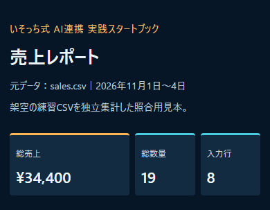
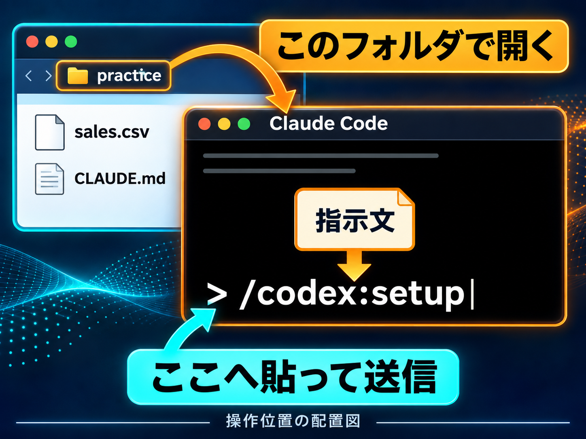
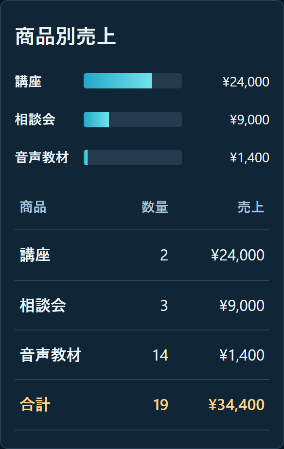

解説動画
動画はまだ届いていません。
数字はある。
任せ方で止まる。
- 売上のメモを、表にまとめられない。
- AIの回答を、別のAIへ貼り直す。
CSVからレポートを1件作ります。作る人と確かめる人を分け、受け渡しを減らしていきます。
僕は、設計と最終確認はClaude Code、実作業はCodexに分けてます。お互いにチェックしてもらいます。
まず、この形を目指す

レポートの実物を開く ↗ PCのClaude Codeを使います
PCのClaude Codeを使います01 同じフォルダで準備
キットを展開し、downloads → practiceを作業場所にします。Claude Codeも、そのpracticeで開きます。
ガイドと練習キットを保存CSV・役割メモ・指示文・照合用完成見本入り。

初回の準備・公式リンク
PCにClaude Code、Codex CLI、Node.js 18.18以降を用意します。再集計コードを動かすにはPython 3も必要です。ClaudeとCodexそれぞれの利用条件・上限を確認してください。
未導入の人は、Claude Code公式とCodex公式プラグインの案内へ。追加やサインインは、自分のPCで内容と対象範囲を確認して進めます。
Claude Codeへ上から1行ずつ送ります。導入済みなら重ねて追加せず、状態の確認へ進んでください。
/plugin marketplace add openai/codex-plugin-cc/plugin install codex@openai-codex/reload-plugins導入後の状態確認。準備不足なら表示された内容を確かめます。
/codex:setupCodexが未サインインのときだけ。ブラウザで自分のChatGPTアカウントへサインインします。
!codex login/codexの候補が出ることと、実際に委任できることは別です。プラグインが無効、別フォルダ用、または認証不足なら、この練習フォルダで利用できる状態を先に確認します。権限を一括許可する設定や、自動レビューゲートの有効化は今回の必須手順に含めません。
モデルの優劣や使用量の削減は保証しません。Codexの作業はCodexの利用量に計上されます。サインインの公式案内
02 役割を残す
下の指示文で、practiceのCLAUDE.mdを読み返します。以降も同じフォルダで進めます。
役割を確認する指示文
貼付先：同じClaude Codeの入力欄
このpracticeフォルダのCLAUDE.mdを読み、次の役割が保存されているか確認してください。同じ内容は重複して追記しないでください。不足があれば、このフォルダのCLAUDE.mdだけを更新し、読み返して要点を報告してください。 ・Claude Code：依頼内容の整理、完成条件と作業順の設計、元データからの独立した最終確認。 ・Codex：公式Codexプラグインを通じたファイル作成・実装・修正。 ・作業前に、このフォルダでCodexへ委任できるか確認する。使えない場合は、設定や権限を勝手に変えず、必要な準備を説明して止める。Claude Codeだけで作って連携できたことにしない。 ・作業はこのpracticeフォルダ内だけ。元のsales.csvは上書きしない。公開・外部送信・課金・新規接続・インストール・権限変更は行わない。 ・作業後は、使った入力・実行した処理・作ったファイル・確認できたこと・未確認を区別して伝える。認証情報はファイルや画面へ出さない。 今回はまだレポートを作らず、CLAUDE.mdの読み取りと必要な最小更新だけを行ってください。
03 レポートを頼む
制作の指示文を、同じClaude Codeへ送信。sales.csvの読み取りとCodexへの委任を確認します。
レポート制作の指示文
貼付先：同じClaude Codeの入力欄
このpracticeフォルダのsales.csvを使い、売上レポートreport.htmlを作ってください。CSVは架空の練習データで、本人の売上ではありません。 まずCLAUDE.mdを読み、このフォルダで公式Codexプラグインへ委任できるか確認してください。利用できない場合は、その状態と必要な準備を説明して止め、設定・権限・アカウントを変更しないでください。別ランナーやClaude Code単独の作業へ置き換えて、連携成功としないでください。 役割は、Claude Codeが設計と最終確認、Codexが実装と修正です。Codexへ具体的な完成条件を渡して、実際に作業を委任してください。 【入力】 sales.csvの列はdate,product,quantity,unit_price。UTF-8（BOMありにも対応）で読み、各行のquantity×unit_priceを売上として計算します。 【完成条件】 1. 総売上、総数量、入力行数を表示する。 2. 商品別の数量と売上を売上の降順で表示し、合計行を付ける。 3. 日別売上を日付の昇順で表示する。 4. 金額は円記号・桁区切りを使う。文字列はHTMLへ安全にエスケープする。 5. 320pxからPCまで読める単体HTMLにする。外部CDNや通信を使わず、ファイルを直接開けるようにする。 6. Python 3の標準ライブラリだけで再生成できるbuild_report.pyも同じフォルダへ保存する。元CSVは変更しない。欠損・不正な数値は黙って0にせず、該当行を知らせる。 7. 最後にClaude Codeが元CSVから独立に再計算して、数値、並び順、保存ファイルを確認する。画面を開けた範囲と未確認の表示幅を区別する。問題があれば具体的な箇所をCodexへ返し、直した後に再照合する。 作業はこのpracticeフォルダ内だけ。公開・送信・課金・新規接続・インストール・権限変更は行わないでください。最後にファイル名、実際の担当、実行した処理、検算結果、残件を短く報告してください。
今回の連携実行画面は未取得です。
実行できないとき・必要な画面
この制作環境では、公式Codexプラグインがこの練習フォルダで有効な状態を確認できず、連携実行は行っていません。設定変更や別ランナーでの代替はしていません。
本人PCで、①practiceで開いたClaude Codeの/codex:setupの状態、②役割メモを読み返した画面、③同じsales.csvを指定した依頼とCodexへの委任開始、④実際の完成ファイルと独立検算結果を各1画面、必要箇所が読める大きさで用意してください。メール、アカウント名、認証コード、他の会話は写さず、画像か画面収録を同じ素材フォルダで受け取れます。
候補が出ない・認証不足・無効のときは、そこで止めて状態を確認します。完成見本を開けたことを、連携できた証拠にはしません。
04 元CSVと照合する
作るところだけ任せず、元の数字から別に確かめます。

数量・金額・並び順を確認。ずれたら、元CSVの行と正しい値を返します。
確認・修正の指示文
貼付先：同じClaude Codeの入力欄
このpracticeフォルダにあるsales.csv、build_report.py、report.htmlを確認してください。新しい題材へ変えず、このCSVだけを使います。 Claude Code側でCSVの各行を独立に計算し直し、作成したreport.htmlと照合してください。期待値は総売上34,400円、数量19、入力8行。商品別は講座=数量2・24,000円、相談会=数量3・9,000円、音声教材=数量14・1,400円です。日別は11/1=3,300円、11/2=12,500円、11/3=6,200円、11/4=12,400円。期待値をHTMLへ固定して合わせるのでなく、元CSVから計算してください。 確認点：数量×単価を行ごとに計算しているか、商品別の売上降順、日別の日付昇順、合計、HTMLの日本語、3ファイルの保存先。可能ならreport.htmlをブラウザで開き、スマホ幅320/360/375/390/430pxとPCの表・桁区切り・はみ出しを確認してください。開けない幅や未実施は、そのまま報告してください。 ずれがあれば、元CSVの行・実際の誤り・正しい値を指して、公式Codexプラグイン経由で該当箇所だけの修正を依頼してください。委任できない場合は設定や権限を変えず止め、別ランナーで修正したことにしないでください。修正後は再計算して再確認します。誤りがなければ修正不要と伝えてください。 最後に実際に確認できた項目と未確認、保存したファイル名を短く示してください。公開や外部送信はしません。
05 保存して、開き直す
sales.csv
build_report.py
report.html生成されたreport.htmlを開き直します。日本語、合計、商品別の表が読めたら完了です。
保存先と再集計を確認
practiceに生成された3ファイルをフォルダで確認し、report.htmlを開きます。CSVを変えた後は、同じpracticeで python build_report.py を実行して再生成します。入力ファイルは変更前のコピーも残してください。
キットの照合用完成見本は、downloads/report.htmlです。今回の制作側でCSVから独立集計したもので、Claude CodeとCodexの連携実行結果ではありません。練習用のpracticeには元CSVと役割メモだけを入れています。
まずは、この1件を開くところまで。次は自分の仕事を1件選び、入力と完成条件を同じ形で渡してみてください。
AIに任せる形ができたら、次は何の仕事に使うか。SNSで収益につながる流れは、7日間の音声で学べます。
100円の音声教材の案内を見る